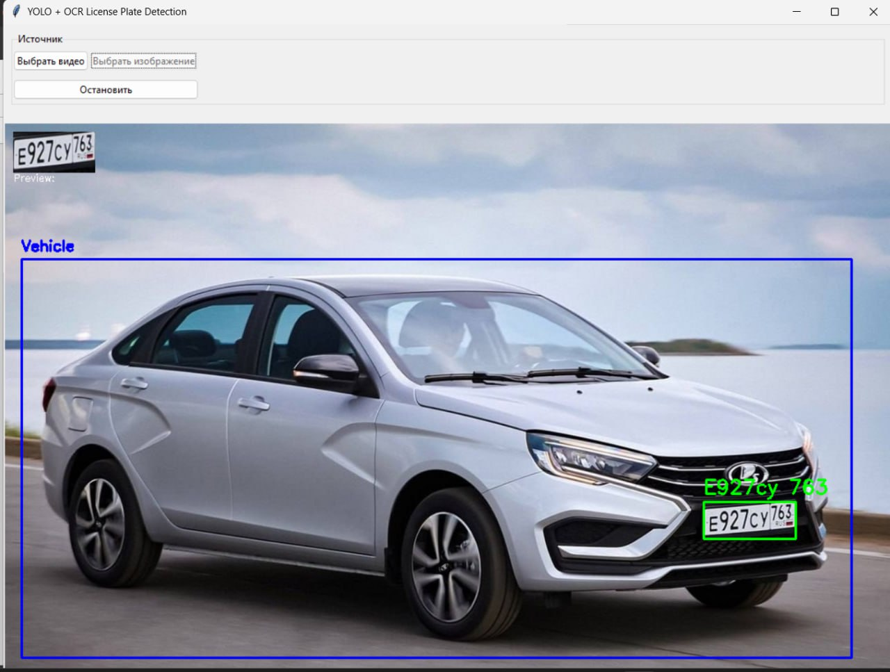
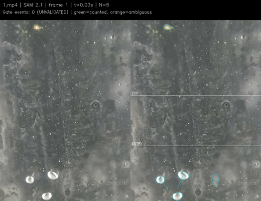

Автоматизация процессов
Нахожу повторяющиеся операции, формулирую гипотезу и собираю пилот, который можно проверить на реальных данных.
Екатеринбург · открыт к проектам
Проектирую прикладные AI-решения для автоматизации процессов: от данных и Computer Vision до API, интеграций и пилота.
business problem
→ working system
01 / Позиционирование
Мне интересно превращать неопределённую бизнес-задачу в понятный, проверяемый и полезный инструмент — с метрикой успеха, интеграцией и обратной связью от пользователей.
Нахожу повторяющиеся операции, формулирую гипотезу и собираю пилот, который можно проверить на реальных данных.
От датасета и обучения до сегментации, object detection, inference и понятного результата для специалиста.
Связываю ML-модуль с backend, ботом, внешними сервисами и пользовательским сценарием.
Архитектура, MVP, пилот, измерение эффекта и следующая итерация — в одной зоне ответственности.
02 / Избранные кейсы
Кейсы собраны вокруг результата: что болело, что было сделано и как понять, что решение работает.
Компьютерное зрение для анализа гранулометрического состава горной массы.
Спроектировал ML/AI-систему на базе SAM3 и стереоглубины: она принимает изображения и видеопоток, сегментирует фрагменты, оценивает размер частиц и формирует отчёт для производственного сценария.
Смотреть доказательства ↘Гибридный поиск поставщиков для food-закупок.
Разработал сервис, который понимает запрос обычным языком, находит релевантных поставщиков и объясняет каждое совпадение. FastAPI и SQLite хранят каталог, избранное, статусы и заметки; правила, RapidFuzz, морфология и rubert-tiny2 ранжируют выдачу. Парсер обновляет публичные данные с контролем качества, а итоговая выборка выгружается в XLSX.
Пайплайн от генерации изображений до публикации каруселей через Telegram-ботов и API Instagram.
Object detection в реальном времени, подсчёт баланса игроков и мгновенное отображение результата на экране.
Открыть демо ↘Парсеры, очистка и отчётность, которые заменили ручную работу с таблицами и ускорили аналитику.
03 / Дополнительные проекты
Учебные и исследовательские проекты, которые показывают широту работы с изображениями, видео и предметной областью.
Распознавание автомобильных номеров: детекция автомобиля и номерного знака, выделение области и OCR-распознавание текста.
Открыть результат ↗
CV-анализ пузырьковой структуры флотации
Отслеживание пузырьков воздуха в камере флотационной машины с использованием SAM3, подсчёт объектов по классам крупности и сравнение режимов аэрации.
Открыть видео ↗
04 / Верификация
Для ZMetrics есть не только технический отчёт, но и внешняя проверка на реальных пробах и карьерном объекте.
Независимая «УралГеоАналитика» сопоставила гранулометрический состав проб с результатами программы. Средняя сходимость в приложенной таблице — 97%.
Открыть письмо ↗На Полдневском карьере система показала точность около 90%, а результаты обработки стали доступны ориентировочно в течение минуты.
Открыть отзыв ↗Технический отчёт содержит P10, P50, P80, график гранулометрического состава, confidence и рекомендации для следующей проверки.
Открыть отчёт ↗04 / Как я работаю
Понятный процесс помогает не потерять бизнес-смысл за стеком технологий.
Кто пользователь, где ручной труд, какая ошибка действительно стоит денег.
Что меняем: время, точность, стоимость, пропускную способность или качество решения.
Данные, модель, API и минимальный интерфейс в одном проверяемом контуре.
Собрать обратную связь, измерить эффект и определить следующую итерацию.
05 / Демо
CV-модуль распознаёт объекты, считает фишки и выводит текущий баланс игрока на экран.
Видео-демо · 30 секунд GIF-превью ↗
06 / Опыт
Архитектура ML/AI-системы ZMetrics, модели CV, датасеты, backend, API, MVP и пилоты.
Генеративные модели, Telegram-боты, API соцсетей, очереди задач, CV-модуль и мониторинг метрик.
Bitrix, CRM, платежи, ERP и внешние API; оптимизация и сопровождение веб-продуктов.
Парсинг, подготовка данных, автоматизация отчётности и визуализация для руководства.
Рекомендательное письмо ↗07 / Образование
Профиль: Автоматизация и управление бизнес процессами
Специальность: Информатика и вычислительная техника
Высшее образование · окончил в 2026 году
Профильные программы Университета Иннополис, ИТМО и УГГУ
08 / Контакты
Расскажите о задаче — обсудим, где AI действительно принесёт пользу.
Написать на email ↗